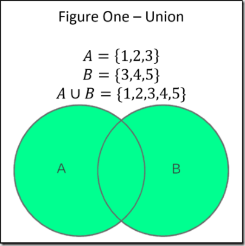
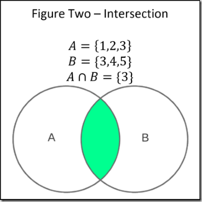
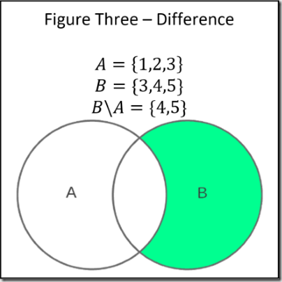

Keyboard shortcuts:
N/СпейсNext Slide
PPrevious Slide
OSlides Overview
ctrl+left clickZoom Element
If you want print version => add '
?print-pdf' at the end of slides URL (remove '#' fragment) and then print.
Like: https://wwwcourses.github.io/...CourseIntro.html?print-pdf
Created for

Iva E. Popova, 2022-2023,

Dictionaries
Dictionaries
What is a Dictionary?
- An unordered collection of objects (values)
- Each value is associated with a unique key.
- A dictionary can be regarded as a collection of key:value pairs
- Dictionaries in Python are similar to associative arrays, hashes (hash tables) in other programming languages (PHP, Perl, Ruby)
Dictionary Structure

Syntax
dictionary = {
'key1': value 1,
'key2': value 2,
'keyN': value N
}
- There is no order in dictionary! We can not say if 'key1' pair will be before 'key2' pair
- In fact, after Python 3.5 the dict objects preserves insertion order, but relying on that property is risky.
- If you need an ordered dict structure - use OrderedDict objects from collections module
- Keys must be immutable data type. Usually they are strings.
- Keys must be unique. If multiple "key:values" pairs with the same key exists, only the last one pair will be present in the dictionary
Dictionaries - examples
### Example 1
en_bg_dict = {
'apple': 'ябълка',
'orange':'портокал',
'banana':'банан'
}
print(en_bg_dict['apple'])
# ябълка
### Example 2 - repeated keys
en_bg_dict = {
'apple': 'ябълка',
'orange':'портокал',
'banana':'банан',
'apple':'манго',
}
print(en_bg_dict['apple'])
# манго
Retrieve item from dictionary
- Dictionary values can be retrieved using their respective key in square bracket:
- Examples:
item = dictionary_name[key]
prices = {
"apples": 2.50,
"oranges": 2.43,
"bananas": 3.50
}
apples_price = prices['apples']
print(f'{apples_price:.2f}')
# 2.50
oranges_price = prices['oranges']
print(f'{oranges_price:.2f}')
# 2.43
Change item in a dictionary
dictionary_name[key] = new_value
### change apples prices:
prices['apples'] = 2.20
print(prices)
# {'apples': 2.2, 'oranges': 2.43, 'bananas': 3.5}
Add item in a dictionary
- Note that, unlike lists, we can use a non-existing key in
dictionary_name[key]to add new item - Examples:
dictionary_name[new_key] = new_value
prices = {
"apples": 2.50,
"oranges": 2.43,
"bananas": 3.50
}
### add new key:value pair:
prices['plums'] = 4.30
print(prices)
# {'apples': 2.5, 'oranges': 2.43, 'bananas': 3.5, 'plums': 4.3}
Delete item from dictionary: del - operator
deloperator deletes the key:value pair whit the given key.- If
keydid not exists a KeyError will be raised. - Example:
del dictionary[key]
prices = {
"apples": 2.50,
"oranges": 2.43,
"bananas": 3.50
}
# delete '"oranges": 2.43' pair:
del prices['oranges']
print(prices)
# {'apples': 2.5, 'bananas': 3.5}
# try to delete non-existing key:
del prices['plums']
# KeyError: 'plums'
Delete item from dictionary: pop()
- If key is in the dictionary, remove it and return its value, else return default.
- If no key or default values are given a KeyError is raised.
value = pop(key[, default])
prices = {
"apples": 2.50,
"oranges": 2.43,
"bananas": 3.50
}
### remove 'apples' key:value pair from the dictionary, and return its value
apples_price = prices.pop('apples')
print(apples_price)
# 2.5
print(prices)
# {'oranges': 2.43, 'bananas': 3.5}
### try to remove 'plums' key:value pair from the dictionary, no KeyError will be raised, as default value is given:
plums_price = prices.pop('plums', None)
print(plums_price)
# None
print(prices)
# {'oranges': 2.43, 'bananas': 3.5}
Get all dictionary keys: keys()
- the
dict.keys()method returns a dict view object of dictionary keys, which means that when the dictionary changes, the view reflects these changes. - Example:
prices = {
"apples": 2.50,
"oranges": 2.43,
"bananas": 3.50
}
prices_view = prices.keys()
print(prices_view)
# dict_keys(['apples', 'oranges', 'bananas'])
# let's change prices:
prices.pop('apples', None)
print(prices_view)
# dict_keys(['oranges', 'bananas'])
keys() - another dynamic view example
prices = {
"apples": 2.50,
"oranges": 2.43,
"bananas": 3.50
}
# get prices keys view:
prices_keys = prices.keys()
print("before:", prices_keys)
# add new key-value pair:
prices["new_key"]="new value"
# check if prices_keys contains the new key
print("after:", prices_keys)
before: dict_keys(['bananas', 'oranges', 'apples'])
after: dict_keys(['new_key', 'bananas', 'oranges', 'apples'])
Get all dictionary values: values()
- the
dict.values()method of a dictionary returns a dict view object dictionary values
prices = {
"apples": 2.50,
"oranges": 2.43,
"bananas": 3.50
}
price_list = prices.values()
print(price_list)
# dict_values([2.5, 2.43, 3.5])
values() - dynamic view example
prices = {
"apples": 2.50,
"oranges": 2.43,
"bananas": 3.50
}
# get prices values view:
prices_values = prices.values()
print("before:", prices_values)
# change a value:
prices["oranges"]=100
# check if prices_values reflects the change:
print("after:", prices_values)
before: dict_values([3.5, 2.5, 2.43])
after: dict_values([3.5, 2.5, 100])
Get all dictionary items (key-value pairs): items()
- the
dict.items()method of a dictionary returns a dict view object of dictionary items, i.e. a view of key-value pairs
prices = {
"apples": 2.50,
"oranges": 2.43,
"bananas": 3.50
}
prices_items = prices.items()
print(prices_items)
# dict_items([('bananas', 3.5), ('apples', 2.5), ('oranges', 2.43)])
items() - dynamic view example
prices = {
"apples": 2.50,
"oranges": 2.43,
"bananas": 3.50
}
# get prices items view:
prices_items = prices.items()
print("before:", prices_items)
# remove an item:
del prices["oranges"]
# check if prices_items reflects the change:
print("after:", prices_items)
before: dict_items([('apples', 2.5), ('oranges', 2.43), ('bananas', 3.5)])
after: dict_items([('apples', 2.5), ('bananas', 3.5)])
dict views in Python3 and Python2
- The
keys(),values()anditems()methods return dict view objects only in Python3. In Python2 they return lists. - If you need to convert a dict view object to a list in Python3, you may use the
list()method`
prices = {
"apples": 2.50,
"oranges": 2.43,
"bananas": 3.50
}
print(list(prices.keys()))
# ['apples', 'oranges', 'bananas']
print(list(prices.values()))
# [2.5, 2.43, 3.5]
print(list(prices.items()))
# [('apples', 2.5), ('oranges', 2.43), ('bananas', 3.5)]
Iterate over dictionary keys:
Note that when using for-in loop, dict_name is the same as dict_name.keys()
### Variant 1:
for key in dict_name:
# do something with a key
# ### Variant 2:
for key in dict_name.keys():
# do something with a key
prices = {
"apples": 2.50,
"oranges": 2.43,
"bananas": 3.50
}
for key in prices:
print(key, end=",")
# apples,oranges,bananas,
for key in prices.keys():
print(key, end=",")
# apples,oranges,bananas,
Iterate over dictionary values:
for value in dict_name.values():
# do something with a value
prices = {
"apples": 2.50,
"oranges": 2.43,
"bananas": 3.50
}
for v in prices.values():
print(v)
2.43
3.5
2.5
Iterate over keys and values
- This is the most often used and the most Pythonic construct for looping over dictionaries
for key, value in dict_name.items():
# do something with a key
# do something with a value
prices = {
"apples": 2.50,
"oranges": 2.43,
"bananas": 3.50
}
for fruit, price in prices.items():
print(f'{fruit}={price}')
# apples=2.5
# oranges=2.43
# bananas=3.5
More on dictionaries
dictclass @python docs- Dictionary view objects @python docs
Sets
Sets
What is a Set?
- An unordered collection of unique and immutable objects.
- Note that the set itself is a mutable object.
- Set data type in Python is an implementation of the sets as they are defined in mathematics.
- Sets are commonly used to test membership, remove duplicates from a sequence, and compute mathematical operations such as intersection, union, difference, and symmetric difference.
Syntax
- Example: set' elements must be immutable:
- There is no order in a set! We can not say if 'value1' pair will be before 'value2'.
- No duplicate items are allowed. If we define a set with duplicate items, duplicates will be ignored!
set = {value1, value2, valueN}
set_of_imutables = {"a", 1, "b", 2, 3}
print(set_of_imutables) #{'a', 'b', 2, 3, 1}
set_of_mutables = { [1,2,3], ["a", "b"] }
print(set_of_imutables) #TypeError: unhashable type: 'list'
int_dup_numbers = {1, 2, 3, 1, 2, 4, 3, 5, 1, 2, 3}
print(int_dup_numbers)
# {1, 2, 3, 4, 5, 6}
int_numbers = {1, 2, 3, 4, 5}
int_dup_numbers = {1, 2, 3, 1, 2, 4, 3, 5, 1, 2, 3}
print(int_numbers == int_dup_numbers)
# True
Set use case: get unique values from a list using set()
# from l1 crate l2 with unique values:
l1 = [1,2,1,3,2,5,3]
l2 = list(set(l1))
print(l2)
# [1, 2, 3, 5]
Sets vs Dictionaries
- Similarities:
- Both are unordered collection of objects (values).
- Both are mutable (add/remove/modify elements)
- Both use curly braces for their literals.
- Differences:
- A dictionary is a collection of
key:valuepairs. - Set is just a collection of immutable objects
- A Set can not contain duplicate items! Dictionaries can.
Sets vs Lists
- Sets are implemented internally as a Hash Table, so they are much faster than lists for operations concerning searching of an element
- Lists are much faster than sets for iteration and random access by element index.
Example: sets are faster for searching elements
import time
# Creating a large set and list for demonstration
large_set = set(range(10_000_000))
large_list = list(range(10_000_000))
# Searching for an element in the set
start_time = time.time()
exists_in_set = 999999 in large_set # Searching for a high number
set_duration = time.time() - start_time
# Searching for the same element in the list
start_time = time.time()
exists_in_list = 999999 in large_list # Searching for the same high number
list_duration = time.time() - start_time
print(f"Time taken for search in set: {set_duration:.8f} seconds")
print(f"Time taken for search in list: {list_duration:.8f} seconds")
# Time taken for search in set: 0.00000381 seconds
# Time taken for search in list: 0.01182604 seconds
Example: lists are faster for iteration
import time
# Creating a large set and list for demonstration
large_set = set(range(10_000_000))
large_list = list(range(10_000_000))
# Iterating through a list and a set
start_time = time.time()
for item in large_list:
pass # Simple iteration
list_iteration_duration = time.time() - start_time
start_time = time.time()
for item in large_set:
pass # Simple iteration
set_iteration_duration = time.time() - start_time
print(f"Time taken for iterating list: {list_iteration_duration:.8f} seconds")
print(f"Time taken for iterating set: {set_iteration_duration:.8f} seconds")
# Time taken for iterating list: 0.26020551 seconds
# Time taken for iterating set: 0.29316807 seconds
Basic sets operations
Basic sets operations
Sets Union
{kind=link}
Returns new set, which elements are in either sets.
Sets Union - example
Pipe operator | or method union can be used
set1 = {1, 2, 3, 4}
set2 = {5, 4}
union1 = set1 | set2
union2 = set1.union(set2)
print(union1)
print(union2)
# {1, 2, 3, 4, 5}
# {1, 2, 3, 4, 5}
Sets Intersection
{kind=link}
Returns new set, which elements belong to both sets.
Sets Intersection - example
Ampersand operator & or method intersection can be used
set1 = {1, 2, 3, 4}
set2 = {5, 4}
intersec1 = set1 & set2
intersec2 = set1.intersection(set2)
print(intersec1)
print(intersec2)
# {4}
# {4}
Sets Difference
{kind=link}
C = B-A, where C is a new set, which elements are the elements of B, which are not present in A
Sets Difference - example
Operator - or method difference can be used
set1 = {1, 2, 3, 4, 5}
set2 = {5, 4}
dif1 = set1.difference(set2)
dif2 = set1 - set2
print(dif1)
print(dif2)
# {1, 2, 3}
# {1, 2, 3}
Sets Symmetric Difference

C = A △ B, where C is a new set, which elements are either in sets A or B but not in both.
Sets Symmetric Difference - example
Operator ^ or method symmetric_difference can be used
set1 = {1, 2, 3, 4}
set2 = {5, 4}
sym_dif = set1.symmetric_difference(set2)
print(sym_dif)
# {1, 2, 3, 5}
More on sets
Exercises
task_best_students_scores.py
the task

- Represent the information given in student_scores table in appropriate data structure.
- From
student_scoresdata, create a new data structure namedbest_students_scores, storing the information (name and score) only for students with scores greater than 4.00 - Print out the names and scores from
best_students_scoresas shown:
Ivan - 5.00
Maria - 5.50
Georgy - 5.00
task_min_max_student_score.py
the task
- Using the same information as in previous task, i.e.
- Print out the name and score of the student with maximum score
- Print out the name and score of the student with minimum score

Maria - 5.5
Alex - 3.5
hints
task_simple_word_index.py
the task
- Make a program which will counts how many times a word appears in given text
text = """apple and banana one apple one banana
a red apple and a green apple"""
# not nessesarly in the same order
apple - 4
and - 2
banana - 2
one - 2
a - 2
red - 1
green - 1
Hints
- Hint 1: for simplicity we will get the "words" as a space separated sequences in string. To get that list of words we can use the
str.split()method, as shown: - Hint 2: you can use the
list.count(x)method which return the number of times x appears in the list.
text = "some words delimited by spaces"
words_list = text.split()
print(words_list)
# ['some', 'words', 'delimited', 'by', 'spaces']
l = [1,1,1,2,2,2,2,3,3]
print(l.count(1)) # 3
print(l.count(2)) # 4
print(l.count(3)) # 2